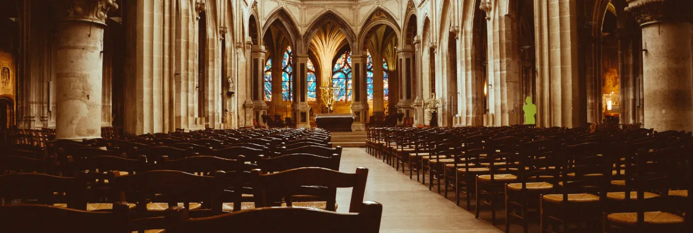

Kultura i tradycje
Chrześcijaństwo miało ogromny wpływ na sztukę, muzykę, literaturę i architekturę. Wiele znanych dzieł malarskich, rzeźb i budowli sakralnych powstało dzięki inspiracji religią.
Życie codzienne
Religia wpływa na obyczaje, święta i rytuały: Boże Narodzenie, Wielkanoc, chrzest, bierzmowanie. Wspólnoty kościelne integrują wiernych, organizują działalność charytatywną i edukacyjną.
